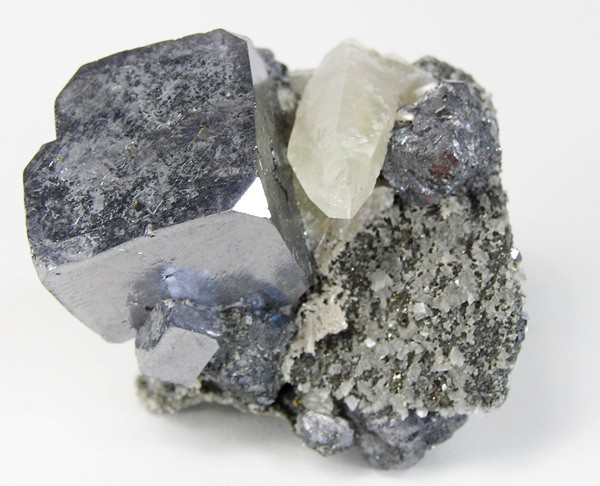

Androdamas
Nazwy Androdamas, Androdamantus, Androdamanta, Andromanta, Andromadas, Androa i Andromantes są zachowywane w dwóch różnych formach. Jeden jest srebrnobiały, sześcienny i znaleziony przez Morze Czerwone; ¹ ² ⁴ ⁵ drugi jest czarny, ciężki i twardy, głównie z Afryki. ¹ ³ Pierwszy uspokaja gniew i namiętne impulsy; ¹ drugi przyciąga metale i po zmieleniu lub potarciu wodą zmienia kolor na krwistoczerwony. ¹ ³
Opis ogólny
Opis
przekazy lapidarne zawierają zarówno srebrno-jasny, sześcienny kamień z Afryki, jak i czarny, ciężki, twardy kamień, głównie z Afryki. ¹ ² ³ ⁴ ⁵ Ich opisy i właściwości różnią się, dlatego poniżej traktuje się je jako odrębne formy, a nie jako jeden jednolity wygląd.
Właściwości
Odmiany
| Podtyp | Nazwy i wygląd | Występowanie | Właściwości |
|---|---|---|---|
| Podtyp I: Srebrno-biały Morze Czerwone Androdamas | Androdamas, Androdamanta, Andromanta, Andromadas i Androa; srebrno-jasny lub biały, sześcienny lub kwadratowy, ciężki i twardy jak Diament. | Piaski według Morze Czerwone. ¹ ² ⁴ ⁵ | Uspokaja wściekłość i namiętne lub pochopne impulsy; łagodzi także pożądanie i smutek oraz zmniejsza ciężkość ciała. |
| Podtyp II: Czarny Afrykański Androdamantus | Androdamantus i Andromantes; czarny, ciężki i twardy. ¹ | Głównie Afryka jest podawane dla Androdamantus; nie podano miejsca dla Andromantes. | Przyciąga srebro i brąz lub mosiądz; ³ po zmieleniu zmienia kolor na krwistoczerwony, a potarty i włożony do wody barwi wodę na krwistoczerwony kolor, jak Hematite. |
Podtyp I: Srebrno-biały Morze Czerwone Androdamas

Na zdjęciu widać Galena-Calcite-217491.jpg (źródło).

Ta forma jest srebrno-błyszcząca lub biała, kwadratowa jak kostka i twarda jak Diament. ² Występuje w piasku przy Morze Czerwone. ¹ ² ⁴ ⁵ Uspokaja wściekłość, gwałtowne namiętności i pochopne impulsy umysłu; zmniejsza także smutek i ociężałość oraz łagodzi pożądanie. ² Andromaia to srebrzysta, czworokątna forma, która powstrzymuje nagłe namiętności i gniew. ⁷
Podtyp II: Czarny Afrykański Androdamantus

Obraz przedstawia Galenę (źródło).

Ta czarna, ciężka i twarda forma przyciąga uwagę srebrem, brązem lub mosiądzem. ¹ Po zmieleniu zmienia kolor na krwistoczerwony jak Hematite; ³ potarty i zanurzony w wodzie barwi wodę na krwistoczerwony kolor. ¹ Androdamantus występuje głównie w Afryce. ³
Źródła
1. Camillo Leonardi — Speculum Lapidum: Androdamanta and Andromantes
Androdamanta lub Andromadas to ciężki i bardzo twardy kamień, podobnie jak diament, który ma przejrzystość polerowanego srebra. Jego formę wyznaczają kwadraty i linie. Występuje w piasku Morze Czerwone. Uważa się, że nosi nazwę swojej mocy, gdyż powstrzymuje złość i impulsy umysłu do pochopnego działania. Jego nazwa pochodzi z języka arabskiego. Jego mocą jest łagodzenie pożądania i zmniejszanie ciężaru ciała. Androa to to samo co Androdamanta.
Andromantes to kamień koloru czarnego, ciężki i twardy. Mówi się, że przyciąga srebro i mosiądz, tak jak magnes przyciąga żelazo. Wcierany i zanurzany w wodzie barwi go na kolor krwi, podobnie jak hematite.
2. St. Albertus Magnus — The Book of Minerals, Tractate II, Andromanta
Andromanta to kamień o srebrzystej barwie, który występuje głównie w Morze Czerwone. Jest kwadratowy jak kostka i twardy jak adamas. Ma moc przeciwko wściekłości i łatwemu podekscytowaniu umysłu, a także smutkowi i ciężkości.
3. St. Isidore of Seville — Etymologies XVI.IV.17, Androdamantus
Androdamantus jest koloru czarnego, znanego ze swojej ciężkości i twardości, stąd wzięła się jego nazwa (por. ἄνδρας δαμάζειν (andras damazein, „ujarzmić ludzi”); ἀδάμας (adamas, „nieugięty”). Występuje głównie w Afryce. Mówi się, że przyciąga do siebie srebro i brąz i podobnie jak Hematite, po zmieleniu zmienia kolor na krew.
4. St. Isidore of Seville — Etymologies XVI.XV.8, Androdamas
Androdamas ma srebrny połysk i jest prawie jak Diament. Zawsze występuje w postaci kwadratów, podzielonych na kostki. Magowie uważają, że jego nazwa została nadana, ponieważ podobno uspokaja i powstrzymuje namiętności i wściekłość duszy, jeśli możemy w to wierzyć (por. ἀνδροδαμάς (androdāmas, „oswajanie”) i 4.17 powyżej). Znajduje się w Morze Czerwone.
5. Marbodus of Rennes — De lapidibus, XLVIII
Th' Androdamas, w kształcie kostki,
W bieli niech z blaskiem srebra rywalizują:
Twardy jak Diament, znaleziony w ruchomym piasku,
Rzucane przez wiatr wzdłuż pasma Morze Czerwone;
Jak nauczają magowie, obdarzeni potężną mocą,
Aby ochłodzić duszę wrzącą wściekłością.
6. Thomas Cantimpre — Liber de natura rerum, Book XIV: “On Precious Stones”, Andromanda
Andromanda to kwadratowy kamień, niezwykle twardy jak diament, srebrny w kolorze i można je znaleźć w Morze Czerwone. Posiada taką moc, że może uspokoić umysł płonący wściekłością. Powstrzymuje także pożądanie.
7. Bartholomaeus Anglicanus — De proprietatibus rerum, Book XVI, Chapter 15: Andromaia
Andromaia jest podobna do niej kolorem: i jest kamieniem w kolorze srebrnym, jak mówi Izydor. I ma kształt czterech rogów, jak róg Diament. A Czarownice wierzą, że ma taką nazwę, że powstrzymuje nagłe namiętności i gniewy serc, jak mówi Izydor, cap. de Gemmis aureis.